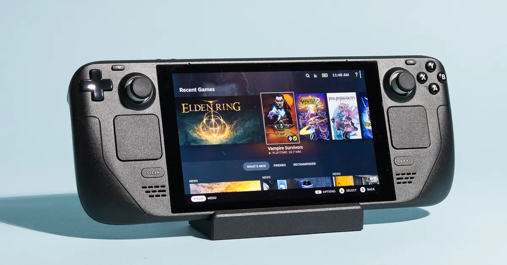

1. Introduction
Released in February 2022, Valve's Steam Deck has been lauded for its versatility and open-source capabilities. For more casual users, the Steam Deck is a comfortable way to play their games anywhere. For more developer-minded users, the Steam Deck allows for great versatility and modding opportunities thanks to its Linux OS and hardware specifications.
Figure 1.1: The Steam Deck!
This guide aims to go over the basic features of the Steam Deck to those who are new to this handy console.
We will go over:
- How to setup the Steam Deck right out of the box.
- The Controls of the Steam Deck.
- Running and managing games on the Steam Deck.
- How to use the Steam Store.
- Chatting with your Steam Friends.
The last section of this guide is for Troubleshooting/FAQ.
Once you feel comfortable with what this guide covers, then you can move on to more advanced uses of the Steam Deck, such as emulating, modding, changing out its hardware, and more!
Now, let's move on to the Next Section: what to do after you've opened the box of your brand new Steam Deck!
Next Section
Back to Table of Contents